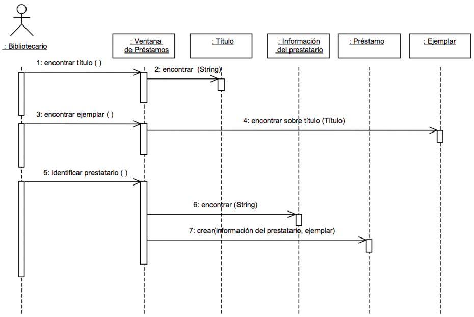

OBJETIVO GENERAL
Conocer sobre los diagramas de secuencia en UML, sus características, funcionamiento y elementos que los componen
Descripción
Un diagrama de secuencia tiene dos dimensiones, el eje vertical representa el tiempo y el eje horizontal los diferentes objetos. El tiempo avanza desde la parte superior del diagrama hacia la inferior. Normalmente, con relación al tiempo sólo es importante la secuencia de los mensajes, sin embargo, en aplicaciones de tiempo real se podría introducir una escala en el eje vertical. Respecto a los objetos, es irrelevante el orden en que se representan, aunque su colocación debería poseer la mayor claridad posible.
Cada objeto tiene asociados una línea de vida y focos de control. La línea de vida indica el intervalo de tiempo durante el que existe ese objeto. Un foco de control o activación muestra el periodo de tiempo en el cual el objeto se encuentra ejecutando alguna operación, ya sea directamente o mediante un procedimiento concurrente.
Objeto y línea de vida
Un objeto se representa como una línea vertical discontinua, llamada línea de vida, con un rectángulo de encabezado con el nombre del objeto en su interior. También se puede incluir a continuación el nombre de la clase, separando ambos por dos puntos.
Si el objeto es creado en el intervalo de tiempo representado en el diagrama, la línea comienza en el punto que representa ese instante y encima se coloca el objeto. Si el objeto es destruido durante la interacción que muestra el diagrama, la línea de vida termina en ese punto y se señala con un aspa de ancho equivalente al del foco de control.
En el caso de que un objeto existiese al principio de la interacción representada en el diagrama, dicho objeto se situará en la parte superior del diagrama, por encima del primer mensaje. Si un objeto no es eliminado en el tiempo que dura la interacción, su línea de vida se prolonga hasta la parte inferior del diagrama.
La línea de vida de un objeto puede desplegarse en dos o más líneas para mostrar los diferentes flujos de mensajes que puede intercambiar un objeto, dependiendo de alguna condición.
Foco de control o activación
Se representa como un rectángulo delgado superpuesto a la línea de vida del objeto. Su largo dependerá́ de la duración de la acción. La parte superior del rectángulo indica el inicio de una acción ejecutada por el objeto y la parte inferior su finalización.
Mensaje
Un mensaje se representa como una flecha horizontal entre las líneas de vida de los objetos que intercambian el mensaje. La flecha va desde el objeto que envía el mensaje al que lo recibe. Además, un objeto puede mandarse un mensaje a sí mismo, en este caso la flecha comienza y termina en su línea de vida.
La flecha tiene asociada una etiqueta con el nombre del mensaje y los argumentos. También pueden ser etiquetados los mensajes con un número de secuencia, sin embargo, este número no es necesario porque la localización física de las flechas que representan a los mensajes ya indica el orden de los mismos.
Los mensajes pueden presentar También condiciones e iteraciones. Una condición se representa mediante una expresión booleana encerrada entre corchetes junto a un mensaje, e indica que ese mensaje sólo es enviado en caso de ser cierta la condición. Una iteración se representa con un asterisco y una expresión entre corchetes, que indica el número de veces que se produce.
Ejemplo
Diagrama de secuencia para el caso de uso: Prestar un ejemplar de una aplicación encargada de los préstamos y reservas de una biblioteca:
CONCLUSIÓN
Como se mencionó anteriormente los diagramas de clases representan información estática de sistema, pero ya en un sistema funcional, los objetos interactúan entre sí con el tiempo, esto se puede representar mediante un diagrama de secuencias.
El objetivo de UML es ser capaz de describir el comportamiento de un sistema, subsistema u operación particular mediante un diagrama de secuencia el cual muestra la interacción de un conjunto de objetos en una aplicación a través del tiempo y se modela para cada caso de uso, esto facilita como se distribuyen las tareas entre los componentes.